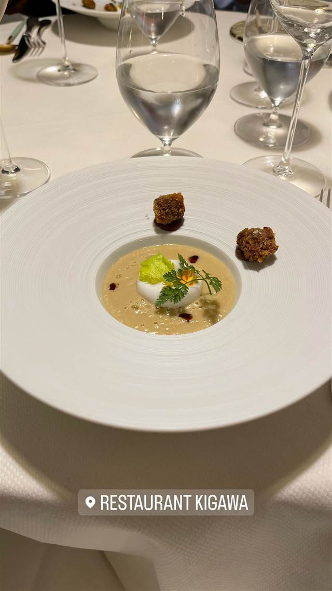

Restaurant Kigawa
日本人シェフが作る、ビブグルマン選出の伝統フランス料理
RESTAURANT KIGAWA
日本人シェフ木川道浩氏が2011年に開いたビストロ。日本とフランス各地で修業を積んで独立し、フランスの伝統料理に日本的な感性を織り交ぜた一皿でミシュランのビブグルマンにも選ばれている。パティシエは妻のジュンコ氏。
TRIVIA
へえ、という話
- 店主は左利きで、修行時代にそれが理由で苦労した経験があるという
- 店名にもかかわらず日本料理店ではなく、伝統的なフランス料理を出す
| 創業 | 2011年3月開業 |
|---|---|
| 看板 | パテ・アン・クルート、鳩のロースト |
| こだわり | フランスの伝統料理をベースに日本的な感性を織り交ぜる。妻ジュンコ氏がパティシエを務める |
| 掲載・受賞 | ミシュランガイドでビブグルマンに選出 |
| 予算 | 昼 €55 夜 €95～€135 |
| 定休日 | 日曜・月曜 |
| 予約 | 予約可 |
| 場所 | メトロ13号線 Pernety駅 186 rue du Château, 75014 Paris, France |
| 注意 | 席数約20席の小さな家族的なビストロ |
食べたもの：コース料理の前菜 / 海老のカダイフ巻き / 苺のデザート
NEARBY
近い店・同じ系統の店
-
 フレンチ 浅草
Nabeno-Ism（レストラン ナベノイズム）
頭のNを隠すと『あべの』になる店名のフレンチコース
昼 ¥20,000～¥29,999 夜 ¥40,000～¥49,999
フレンチ 浅草
Nabeno-Ism（レストラン ナベノイズム）
頭のNを隠すと『あべの』になる店名のフレンチコース
昼 ¥20,000～¥29,999 夜 ¥40,000～¥49,999
-
 フレンチ 白金高輪駅
AKOWA（アコワ）
大使公邸の元専属シェフが作る日本初の本格ペルー料理
フレンチ 白金高輪駅
AKOWA（アコワ）
大使公邸の元専属シェフが作る日本初の本格ペルー料理
-
 フレンチ 代官山
TACUBO（タクボ）
暖炉の薪火で焼き上げる肉料理が看板の隠れ家イタリアン
夜 ¥40,000～¥49,999
フレンチ 代官山
TACUBO（タクボ）
暖炉の薪火で焼き上げる肉料理が看板の隠れ家イタリアン
夜 ¥40,000～¥49,999
-
 フレンチ 美栄橋駅
和琉料理 さりぃ
北海道仕込みの店主が沖縄食材で仕立てる和琉コース
夜 ¥8,000～¥9,999
フレンチ 美栄橋駅
和琉料理 さりぃ
北海道仕込みの店主が沖縄食材で仕立てる和琉コース
夜 ¥8,000～¥9,999
-
 フレンチ カパフル
Deck.
ダイヤモンドヘッド望むプールデッキで食べるハウピアフレンチトースト
フレンチ カパフル
Deck.
ダイヤモンドヘッド望むプールデッキで食べるハウピアフレンチトースト
-
 フレンチ 北品川
カンテサンス（Quintessence）
2007年から守り続けるミシュラン三つ星、おまかせコースのみ
夜 ¥30,000～¥39,999
フレンチ 北品川
カンテサンス（Quintessence）
2007年から守り続けるミシュラン三つ星、おまかせコースのみ
夜 ¥30,000～¥39,999